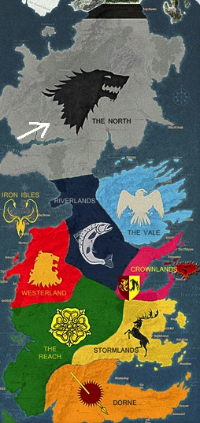
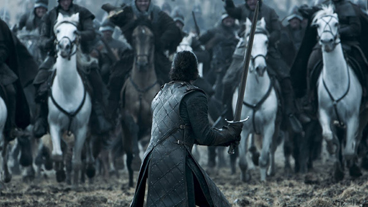
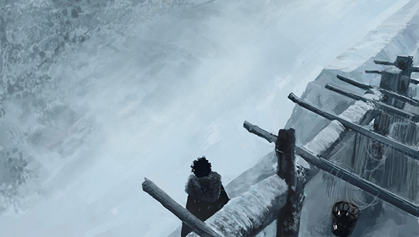
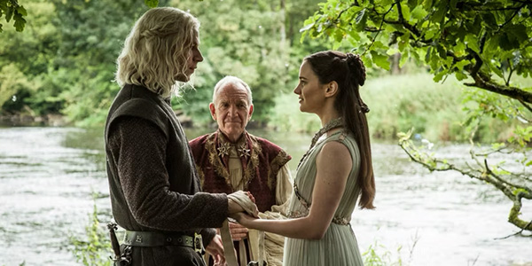

Personality
Jon Snow isn't Ned Starks heir, but he is the most like him out of all of the Staks. Noble, Honorable, Works hard for the good of everyone. And he has a bit of a temper when it comes to other people's dishonor. (Jon left, Ned right)

Jon Snow is the bastard son of Ned Stark who is warden of the north, one of the seven realms of westeros; a continent ruled by kings and queens all vying for the iron throne which controls the whole continent. He gets his name of Snow from being a child born with unmarried parents in the north of the continent, that's why he doesn't use the name Stark. (From Game Of Thrones)
Jon Snow isn't Ned Starks heir, but he is the most like him out of all of the Staks. Noble, Honorable, Works hard for the good of everyone. And he has a bit of a temper when it comes to other people's dishonor. (Jon left, Ned right)
Jon is an incredibly skilled Swordfighter who isn't the best at plans in the show, and an intellectual genius who isn't that good with a sword in the books. Either way he goes against all odds with his own skills, without the support that his siblings would get since he is a bastard.
Jon is a brother of the Nights Watch, an ancient order of criminals or volunteers (like Jon) who take vows to fight at the top of the north in castles built on this giant wall made of ice, to defend the realms below from wildlings, who are people living beyond the wall, that Jon realises are just people and he does the noble thing and helps them. Or The Others, A group of White Walkers who are zombie-like creatures that aim to kill all of humanity. But most people south of the wall don't believe they exist
Jon snow has a secret he doesnt know of yet. He Isn't a bastard. He's not a snow. He's a stark. But also a Targaryen, Another royal family that can control dragons. His father isnt Ned stark, but Rhaegar Targaryen. And his mother isnt unknown, but Neds sister lyanna Stark. They got married in secret because Lyanna was set to marry the king she didnt want to marry, and they all thought she was kidnapped by rhaeghar but it was a cover to let her live the life she wanted. On her deathbed from giving birth to Jon, She asked Ned to keep Jon's identity secret. but he is actuall Aegon Targaryen, true heir to all of Westeros.
